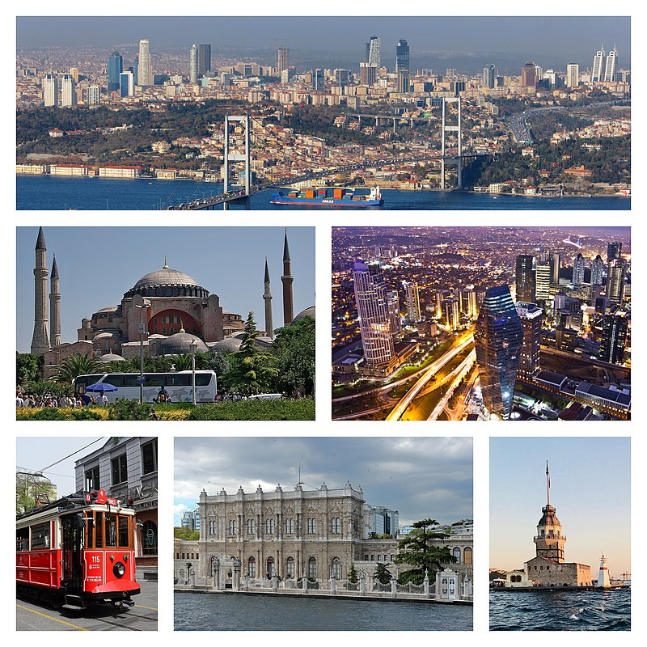

| İstanbul , Türkiye'de Marmara Bölgesi'nde yer alan şehir ve ülkenin 81 ilinden biri.
Ülkenin en kalabalık, ekonomik, tarihi ve sosyo-kültürel açıdan önde gelen şehridir.
Şehir, iktisadi büyüklük açısından dünyada 34. sırada yer alır. Nüfuslarına göre
şehirler listesinde belediye sınırları göz önüne alınarak yapılan sıralamaya göre
Avrupa'da birinci, dünyada ise altıncı sırada yer almaktadır.
|
 |
|
Pandemi İstanbul'un nüfusunu azalttı. TÜİK verilerine göre İstanbul'un nüfusu 2020 yılında 2019'a
göre 56 bin 815 kişi azalarak 15 milyon 462 bin 452 kişiye düştü. Türkiye nüfusunun yüzde 18.49'unun
ikamet ettiği İstanbul'un nüfusu binde 3.7 azaldı.Bu 2000 yılından bu yana ilk. Öte yandan nüfus kütüğüne
kayıtlı olunan iller bazında bakıldığında İstanbul'da nüfus kütüğüne kayıtlı olup
İstanbul'da ikamet edenlerin sayısının 2 milyon 159 bin 995 kişi olduğu dikkat çekiyor.
İstanbul'da ikamet eden 768 bin 338 kişinin nüfus kütüğüne kayıtlı olduğu .
|
Çamlıca Camii, Türkiye'nin İstanbul şehrinde yer alan bir camidir. Çamlıca, Üsküdar'da yapımına 29 Mart 2013'te başlanan cami, cumhuriyet tarihinin en büyük camisidir. 63 bin kişi kapasiteli ve 6 minareli cami 57 bin 500 metrekarelik alana sahiptir. Cami külliyesinde aynı zamanda müze, sanat galerisi, kütüphane, bin kişilik konferans salonu, 8 sanat atölyesi ve 3 bin 500 araçlık otoparkı bulunmaktadır.
|
Dolmabahçe Sarayı, İstanbul, Beşiktaş'ta, Kabataş'tan Beşiktaş'a uzanan Dolmabahçe Caddesi'yle İstanbul Boğazı arasında, 250.000 m²lik bir alan üzerinde bulunan Osmanlı sarayı. Marmara Denizi'nden Boğaziçi'ne deniz yoluyla girişte sol kıyıda, Üsküdar ve Kuzguncuk'ın karşısında yer alır. İnşaatı 1843 yılında başlayıp 1856 yılında bitmiştir.
|
Topkapı Sarayı , İstanbul Sarayburnu'nda, Osmanlı İmparatorluğu'nun 600 yıllık tarihinin 400 yılı boyunca, devletin idare merkezi olarak kullanılan ve Osmanlı padişahlarının yaşadığı saraydır.Bir zamanlar içinde 4.000'e yakın insan yaşamıştır.
|
|